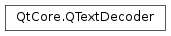

QTextDecoder¶
Synopsis¶
Functions¶
- def
hasFailure() - def
toUnicode(ba)
Detailed Description¶
The
PySide2.QtCore.QTextDecoderclass provides a state-based decoder.A text decoder converts text from an encoded text format into Unicode using a specific codec.
The decoder converts text in this format into Unicode, remembering any state that is required between calls.
-
class
PySide2.QtCore.QTextDecoder(codec)¶ -
class
PySide2.QtCore.QTextDecoder(codec, flags) Parameters: - codec –
PySide2.QtCore.QTextCodec - flags –
PySide2.QtCore.QTextCodec.ConversionFlags
Constructs a text decoder for the given
codec.Constructs a text decoder for the given
codecand conversionflags.- codec –
-
PySide2.QtCore.QTextDecoder.hasFailure()¶ Return type: PySide2.QtCore.boolDetermines whether the decoder encountered a failure while decoding the input. If an error was encountered, the produced result is undefined, and gets converted as according to the conversion flags.
-
PySide2.QtCore.QTextDecoder.toUnicode(ba)¶ Parameters: ba – PySide2.QtCore.QByteArrayReturn type: unicode This is an overloaded function.
Converts the bytes in the byte array specified by
bato Unicode and returns the result.
© 2018 The Qt Company Ltd. Documentation contributions included herein are the copyrights of their respective owners. The documentation provided herein is licensed under the terms of the GNU Free Documentation License version 1.3 as published by the Free Software Foundation. Qt and respective logos are trademarks of The Qt Company Ltd. in Finland and/or other countries worldwide. All other trademarks are property of their respective owners.